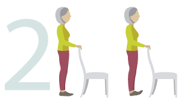

• MAKE SURE THE CHAIR YOU USE IS STURDY
• WEAR SUPPORTIVE SHOES
• IF YOU EXPERIENCE CHEST PAIN, DIZZINESS OR SEVERE
SHORTNESS OF BREATH, STOP AND CALL YOUR GP OR CALL 111
• A SLIGHT SORENESS THE DAY AFTER IS QUITE NORMAL

Heel Raises
Stand tall, holding the back of
a sturdy kitchen-type chair or
kitchen sink, then lift your heels
off the floor, taking your weight
onto your big toes. Hold for
three seconds, then lower with
control. Repeat 10 times.

Toe Raises
Stand tall holding the same
support, then raise your
toes – taking your weight on
your heels. Don’t stick your
bottom out. Hold for three
seconds, then lower with
control. Repeat 10 times
 Keep moving for a balanced life
Keep moving for a balanced life
 Help prevent other people falling
Help prevent other people falling


 Badly fitting shoes. Our feet change shape as we age and
lose some feeling and flexibility, so a well-fitted shoe is vital;
what fitted 10 years ago may not be right any more.
See the buying guide opposite
Badly fitting shoes. Our feet change shape as we age and
lose some feeling and flexibility, so a well-fitted shoe is vital;
what fitted 10 years ago may not be right any more.
See the buying guide opposite Trailing clothes. Always take time to tie belts or cords on
clothes and dressing gowns – or remove them altogether.
Hem trousers that are too long.
Trailing clothes. Always take time to tie belts or cords on
clothes and dressing gowns – or remove them altogether.
Hem trousers that are too long. ‘Shuffly’ walking. It’s easy to get into the habit of not lifting
your foot as high as you used to when walking, but it increases
your chance of tripping. The exercises on page 16-17 will help.
‘Shuffly’ walking. It’s easy to get into the habit of not lifting
your foot as high as you used to when walking, but it increases
your chance of tripping. The exercises on page 16-17 will help. Worn-out slippers. They may be like old friends, but it’s
time to say goodbye to your slippers if they have holes in their
soles, frayed uppers, broken-down backs or the fit is ‘sloppy’.
Slippers should fasten, stay on and provide grip.
Worn-out slippers. They may be like old friends, but it’s
time to say goodbye to your slippers if they have holes in their
soles, frayed uppers, broken-down backs or the fit is ‘sloppy’.
Slippers should fasten, stay on and provide grip. Walking in socks/tights on hard floors. Never, ever do it
(wear the new slippers instead!)
Walking in socks/tights on hard floors. Never, ever do it
(wear the new slippers instead!)


 If you think they are
uninjured and can get up,
see how much of it they can
do themselves using the
technique on
If you think they are
uninjured and can get up,
see how much of it they can
do themselves using the
technique on  Your ability to help will
depend on your physique
and health and on their
strength and balance. The
safest way is the technique
described on
Your ability to help will
depend on your physique
and health and on their
strength and balance. The
safest way is the technique
described on